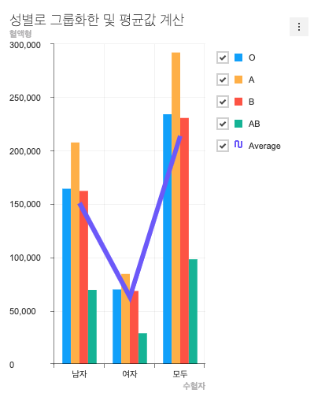

5. 라인-컬럼 콤보차트 생성하기¶
라인-컬럼 차트를 사용법은 아래 깃헙의 위키 문서에 자세히 설명되어 있습니다.
5.1. 라인-컬럼 차트 생성을 위한 raw data 가공하기¶
라인-컬럼 차트는 차트 2개를 사용하는 콤보 차트 이기 때문에 lineColumnData.series 의 형태가 배열이 아닌 객체로 차트 2개에 대한 데이터를 전부 갖고 있습니다.
// src/index.js
const lineColumnData = {
categories: ['남자', '여자' , '모두'],
series: {
column: [
{
name: 'O',
data: [164350, 69846, 234196]
},
{
name: 'A',
data: [207708, 84416, 292124]
},
{
name: 'B',
data: [162275, 68453, 230728]
},
{
name: 'AB',
data: [69444, 28708, 98152]
},
],
line: [
{
name: 'Average',
data: [150944, 62855, 213800]
}
]
}
};
5.2. 라인-컬럼 차트 생성을 위한 기본 옵션 만들기¶
앞의 도넛 차트 에서 처럼 기본 옵션을 만들어 줍니다.
// src/index.js
const lineColumnOptions = {
chart: {
width: 400,
height: 500,
title: '성별로 그룹화한 및 평균값 계산',
format: '1,000'
},
yAxis: {
title: '혈액형'
},
xAxis: {
title: '수혈자'
}
};
5.3. html에 바 차트를 그리기 위한 공간 만들기¶
// src/index.html
<div id="line-column"></div>
5.4. 라인-컬럼 차트의 인스턴스 만들기¶
// src/index.js
const lineColumnChart = tuiChart.comboChart(document.getElementById('line-column'), lineColumnData, lineColumnOptions);
5.5. 결과 확인¶
위 예제를 잘 따라 오셨을 경우 아래 이미지와 같은 형태의 라인-컬럼 차트가 만들어집니다.
